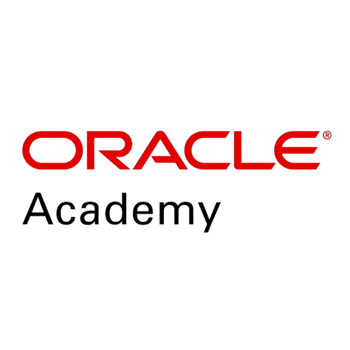
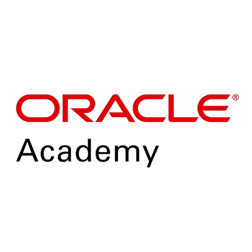

Kinal ofrece su programa de Educación General Básica para todos aquellos jóvenes que buscan una orientación técnica y excelencia académica.

TU CAMINO AL ÉXITO ESTÁ EN KINAL
Kinal es un Centro Educativo privado, no lucrativo, dirigido a la formación técnica profesional de jóvenes y adultos, de
beneficio colectivo y asistencia social en favor de los sectores más necesitados de la comunidad.
Nuestro valor fundamental es enseñar a realizar el trabajo bien hecho, que sea la base de la superación de alumnos y el
medio para servir a los demás.


Durante 3 años se prepara al joven de forma técnica y académica, el egresado estará listo trabajar en el ramo técnico de la especialidad que eligió estudiar; el título obtenido le permitirá ingresar a la universidad.

Contamos con más de 30 especialidades técnicas y tecnológicas que pueden favorecer tu crecimiento y/o tu inserción laboral.

Podemos diseñar conjuntamente el programa de formación profesional que mejor se adapte a tus necesidades de capacitación

Dirigido al fortalecimiento de mandos medios y especialmente aquellos que han cursado una carrera técnica y desean continuar con estudios a nivel universitario. Estos estudios son avalados por la Universidad del Istmo.
NUESTROS PARTNERS


 


¿ERES ANTIGUO ALUMNO?
¡LAS EMPRESAS TE ESTÁN BUSCANDO!
Durante 2023 recibimos más de 600 solicitudes de trabajo para nuestros antiguos alumnos.


¿ERES ANTIGUO ALUMNO?
¡LAS EMPRESAS TE ESTÁN BUSCANDO!
Durante 2023 recibimos más de 600 solicitudes de trabajo para nuestros antiguos alumnos.
JÓVENES BENEFICIADOS (A 2024)
25k
ESCUELA TÉCNICA
1500
CICLO BÁSICO
6k
DIVERSIFICADO
+32k
TOTAL
NUESTRO BLOG
-

Patronato Kinal
Mensaje Semanal #3 | 2025
-

Patronato Kinal
NMensaje Semanal 49 | 2024
-
Patronato Kinal
Mensaje Semanal 48
-

Patronato Kinal
Mensaje Semanal 46